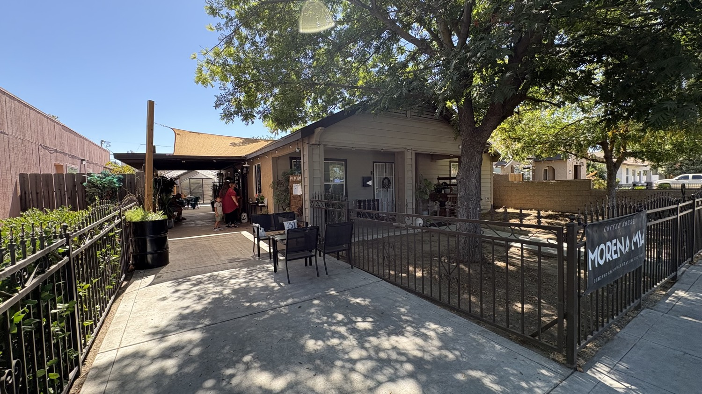
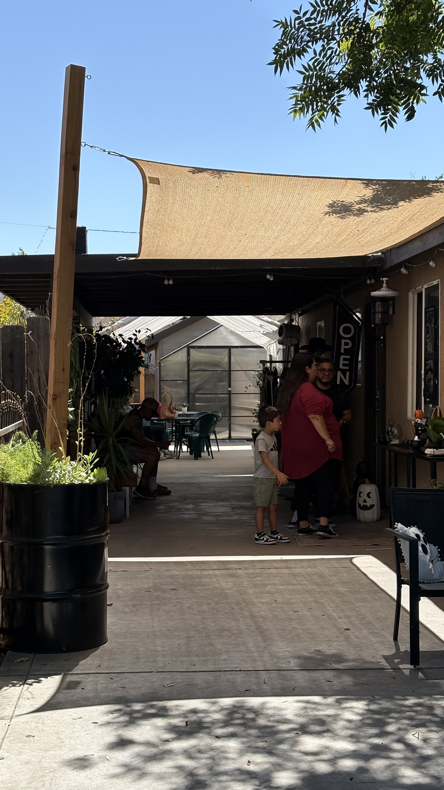
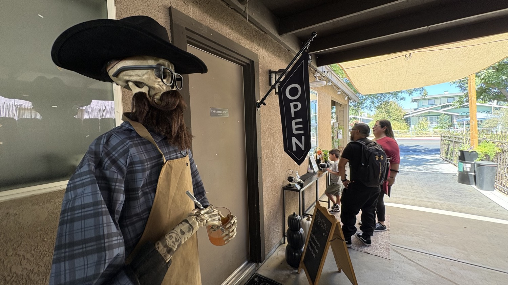
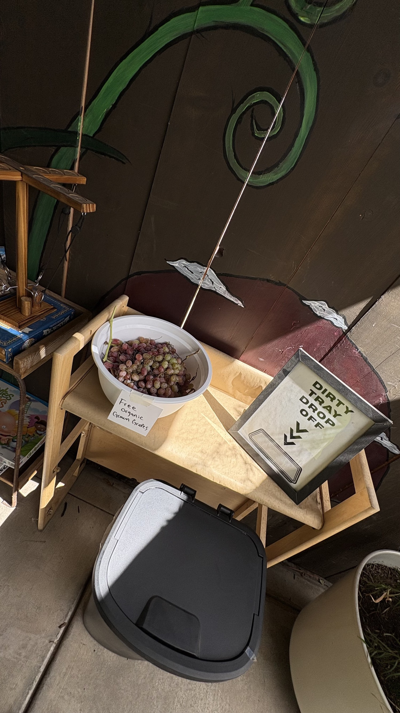
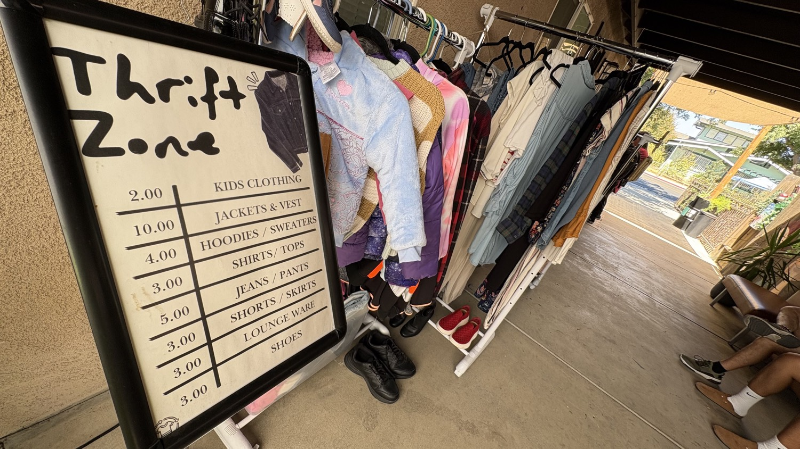
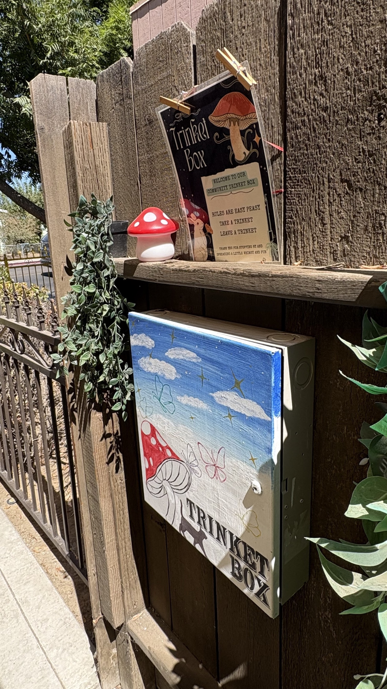
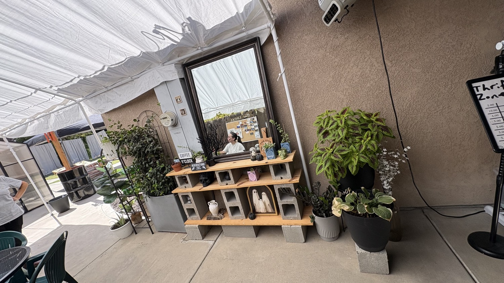
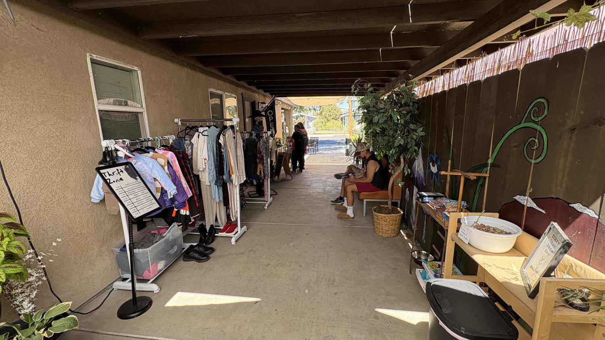
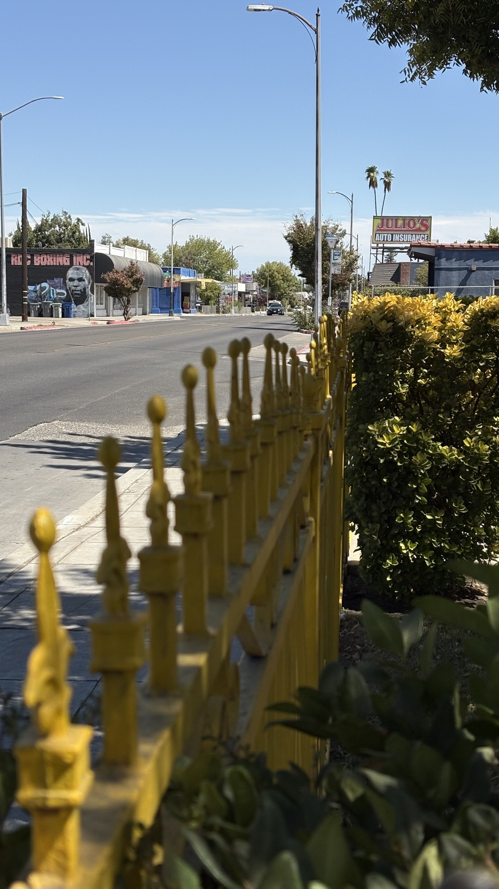
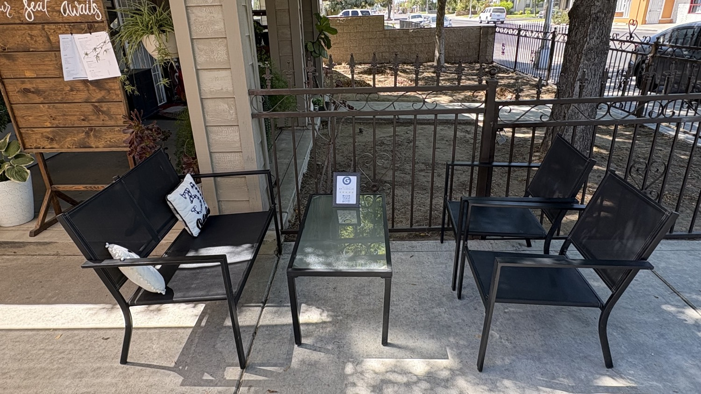

This is a High Tower District story because the business showed up on the group first. That is the sequence that matters. They asked the neighborhood to look. Someone from the neighborhood went and looked.
The visit was short on purpose. No menu study. No performance. Walk the covered walk, look at what they put out for the street, ask for ice, leave the place better than a drive-by review.
Everything in view was inviting. Painted mushrooms on the fence. A trinket box with a child's rule set. Free organic grapes in a white bowl. A thrift rack with honest prices written in marker. A skeleton in a cowboy hat holding a drink like it has been working that door all summer.

The ice
A 16-ounce stainless insulated cup went across the counter with a simple request for ice. The expectation was to pay. They asked what was owed. The answer came back as nothing.
They may have recognized the face from the group. That is possible and it does not change the standard this story is holding. The portrait here is the one that belongs on Olive: if you show up behaving in accordance with the law, and you need ice on a hot Valley afternoon, this house will fill the cup.
Ice is not a small thing in September in Fresno. It is a resource. It is also a tell. A business that will give it away without a ticket is running on surplus hospitality, not on extraction.
They get the full pass without a purchase. The menu was not even opened. That is not an insult to the kitchen. It is a compliment to the house. The need was ice. The need was met. That is the best neighborhood business a person can imagine.

What they put on the fence
The covered walk is not a hallway. It is a porch that learned how to be a small town.
- Free organic grown grapes in a bowl with a handwritten card.
- A dirty-tray drop with arrows so the system can keep itself clean.
- Board games on a low shelf. Uno. Chutes and Ladders. A metal bowl like a dog might drink there too.
- Thrift Zone prices that a person can actually pay. Kids clothes at two dollars. Jackets at ten. Shirts at four. Shoes at three.
- A community trinket box: take a trinket, leave a trinket.





How to land on Olive
Address: 213 W Olive Ave, Fresno, CA 93728. West of the old Tower core, on the same street as the boxing mural and Julio's sign if you are looking east.
The easy way is to travel eastbound on Olive and take a parking spot before you reach the address, not after you pass it. That keeps you from having to reverse into the street.
A westbound pass works if traffic is thin. A U-turn after you go by is possible. Backing from a spot into live Olive is the version that gets borderline. If you miss it, continue and turn around in a driveway farther south rather than fighting the curb in front of the house.
On a quiet Sunday there is room. On a busier afternoon, give yourself the extra block.


The seal
Morena Mia is an official supported business of the High Tower District on Olive Avenue.
The seal is not a paid placement. It is a field note. They posted. A neighbor came. The place was inviting. A cup of ice was given at no charge to a person who was prepared to pay. That is enough.
Go if you want coffee, thrift, grapes, or shade. Go if you only need ice and you are keeping the peace. They already passed the test that matters on this street.
Pin and hours
Google Maps: 213 W Olive Ave, Fresno, CA 93728
Public listings around this writing: closed Monday and Tuesday. Wednesday and Thursday morning into early afternoon. Friday a little later. Sunday late morning into mid afternoon. Saturday often closed. Confirm on their page before you roll.
Instagram: @morenamiabakerycafe
Yelp listing: Morena Mia, 213 W Olive Ave.
Closing
The High Tower District does not need every business to be a destination restaurant. It needs houses on the avenue that still know how to treat a person who walks up with an empty cup.
This one does. That is the story.